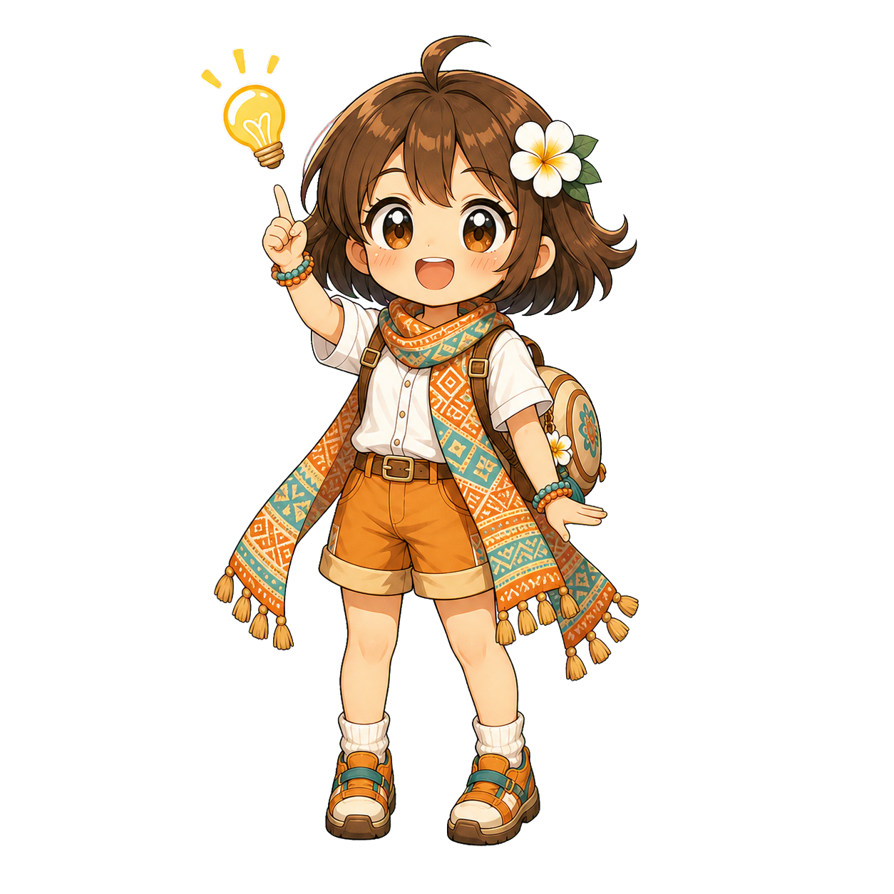
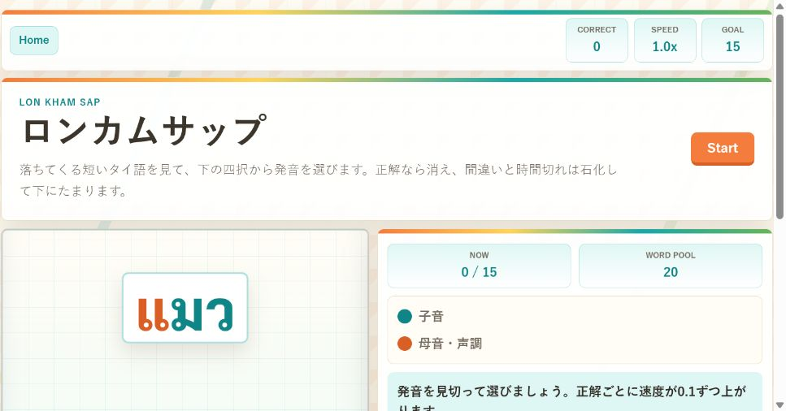
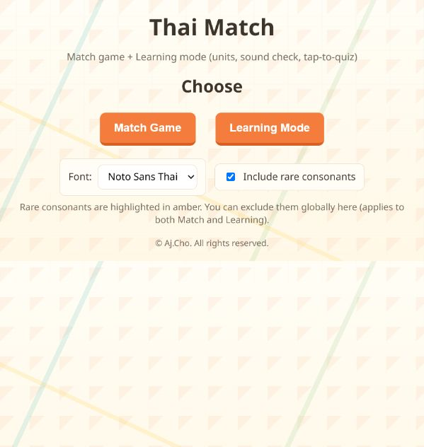

Nari's Thai Adventure
Nari's Thai Adventure Notes
Choose a Thai practice quest for word order, letters, pronunciation, and vocabulary. Nari is ready to cheer you through today's route.
Sawatdee! Which island should we explore today?


Rian
Arrange Thai and Japanese cards to feel how word order and modifier relationships shift between the two languages.
Word order
Japanese
Thai reading
Play this game →


Akson Thai
Match Thai consonants and vowels with their Paiboon-style readings, adding letters level by level.
Letters
Memory
Levels
Play this game →
หมา
dog

Phuk Thai Kham Sap
Practice lesson-note vocabulary with Thai script, Paiboon romanization, search, bookmarks, and review mode.
Vocabulary
Six choices
Review
Play this game →


Ron Kham Sap
Pick the correct Paiboon pronunciation before each falling Thai word reaches the stone stack.
Thai script
Pronunciation
Speed
Play this game →

Jam Akson Thai
Use match games, sound checks, and quizzes to connect Thai letter shapes with their sounds.
Sound
Letters
Quiz
Play this game →